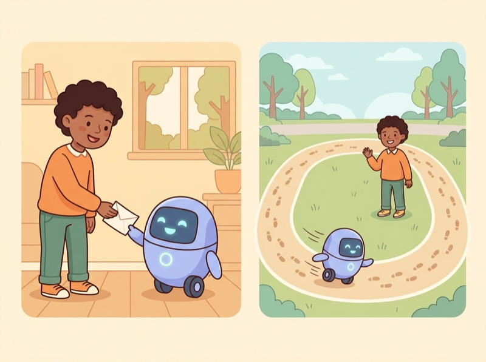
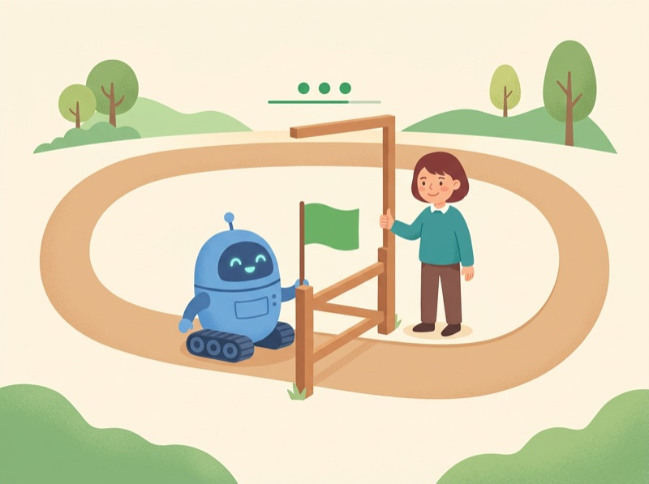
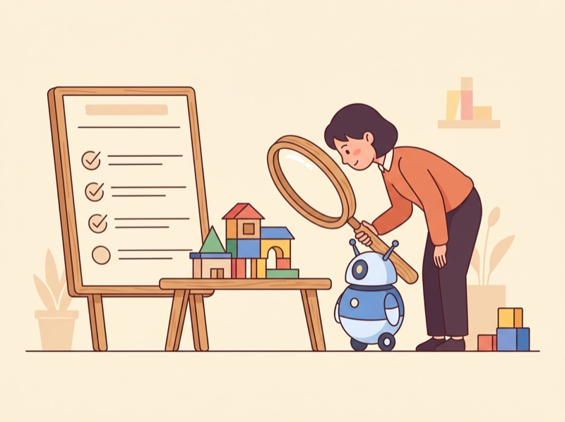

📱 スマホで開く
教室の画面を見ながら、自分のスマートフォンで、このページを開けます。スマートフォンのカメラで、このQRコードを読み取ってください。QRコードを押すと、大きく表示されます。
🎮 ループハンター（1人用の練習ゲーム）
1限後半に、全員で遊びます。欠席した人、早く終わった人、家での復習にも。ルールで動く練習用AI「ミミ」を相手に、①止める条件がないループ ②ループを設計する ③設計の穴を見抜くの3ステージ（③は早く終わった人向け）で、1周の大きさ・止める条件・人が見る場所を決めると、ループがどう変わるかを体験できます。遊んだ結果は「気づきのメモ」としてコピーできます。本物のagyやAI Studio Buildには接続せず、入力した内容はどこにも送信・保存されません。
→ ゲームを開くsakuhin-N.html、またはBuildの作品）もすぐ開ける状態にする。第9回の課題「周回ログに使う場面を1つ選ぶ」の続きに使う。選べていない人は、1限後半で選ぶこの回のゴール
- 「プロンプト」と「ループ」の違いを、自分の第9回の2周を例に説明できる
- ループの3つの決めごと（1周の大きさ・止める条件・人が見る場所）を言え、自分の作品の頼み方に当てはめられる
- 自分の記録を周回ログにして、どう頼み、どこで止め、どこで人が見たかを、説明できる（見せ合いは任意）
- 決めごと3つと回数の上限を書いた計画で、自分の作品のループを（最大2周）まわし、止める条件で止められる
- 今日の気づき（見せ合いに出た人は、人の工夫も）を1つ以上取り入れて、頼み先のメモを書き直し、第11回の目標を短い計画に書ける
授業の流れ
2コマ連続（90分 + 90分 = 計180分）。途中休憩あり。
今日の地図
プロンプトからループへ：頼み方を、周回で捉え直す
記録を開き、第9回の「2周」を思い出す（8分）
- 対話ログと指示メモを開く。第9回の結果①（1周目）と結果②（2周目）を読み返す。人に見せるかもしれない記録に、実名・他人の個人情報・APIキーが入っていないかも、ここで探す（見つけたら、見せるものから外すか、
＊＊＊に書き換える） - agyを選んでいる人: 停止していたCodespaceを再開（resume）する——「Create codespace」で新規作成しない（resumeで動かないときは、講師に声をかける）。agyで再ログインを求められたら、第2回と同じ手順で再認証する。Buildを選んでいる人は、Google AI Studio（学校のアカウント）で作品を開いておく
- 気づいてほしいこと: 第9回で、あなたは「頼む→結果を見る→直して、また頼む」を2回まわした。今日は、これに名前を付ける
プロンプトからループへ（17分）
1回の頼みと、何周かのループ

1回の頼み方から、周回の設計へ
- プロンプトは、AIへの1回の頼み方。ループは、「頼む→結果を見る→直して、また頼む」を何周かまわす、全体の設計。第5〜9回で練習してきた「指示を重ねて作品を育てる」は、すでにループだった
- 公式の資料でも、エージェントは「文脈を集める→行動する→確かめる→くり返す」の流れで動くことが多い、と書かれている（Anthropicの公式ブログ。原文は
gather context -> take action -> verify work -> repeat。確認日 2026-11-24）。「ループ」は、このくり返しの設計の話
1周の中身
- 注意: 「ループ（ループエンジニアリング）」は2026年に広まった新しい言葉で、定義は決まっていません。IBMの解説記事は、「人の手をなるべく減らして、AIを繰り返し導く仕組みを設計すること」と書いている（2026-07-17公開。ベンダーの解説で、標準の定義ではない）。この授業では、AIに自動でまわさせず、人が1周ずつ見て、次の1周を決める
-
公式資料で確かめたこと（確認日 2026-11-24）
- Anthropic「Building agents with the Claude Agent SDK」:
gather context -> take action -> verify work -> repeat（Claude Codeと、エージェント一般の流れとして書かれている） - Claude Agent SDKの公式ドキュメント「エージェントループの仕組み」: 回数の上限（
max_turns）と、費用の上限（max_budget_usd）を設定できる。どちらも既定は無制限で、上限がないと、AIが「終わり」と判断するまで続き、広い頼み方では長引くことがある、と書かれている（英語版の原文で確認）。なお、ここでの回数は「ターン」（ツール呼び出しを伴う1往復）で、授業の「周」とは数え方が違う - 誰が最初にこの言葉を使ったか、いつ広まったかは、記事によって書き方が違う。この授業では、出どころを断定しない
- Anthropic「Building agents with the Claude Agent SDK」:
ループの3つの決めごと（15分）
ループの3つの決めごと
止める条件：ここまで来たら、止まる

人が見る場所：自分の目で確かめる

- 1周の大きさ——第9回の「今日の目標は1つだけ」「足さないものを書く」は、これだった
- 止める条件——第8〜9回の「確かめ方（画面を見て、できた／できないと言える形）」は、これだった。ここに、回数の上限（例: 2周まで）を足す
- 人が見る場所——第9回の「結果を◎△✕で見る」は、これだった。AIは、確かめていないことを「できました」と言うことがある（授業での経験則で、公式の記述ではない）。最後は人が見る
- 自分の第9回の2周を、この3つに当てはめて、指示メモに1行ずつ書く（例:「1周の大きさ: 目標を1つにした。止める条件: 確かめ方を満たしたら。人が見る場所: 毎回、プレビューで」）。決めていなかったものは、「決めていなかった」と書く
見本（例）：2周を、3つの決めごとで見る
ゲームで体験し、自分の記録を周回ログにする
ゲーム『ループハンター』で体験する（30分）
- ループハンターを開き、1人で遊ぶ（画面右上の「ステージを選ぶ」から、ステージ1→2の順に。ステージ3は、早く終わった人向け）
- ステージ1（止める条件がないループ）: ミミに「もう1周」をまわしてもらい、どこで止めるかを自分で決める。3周目でできているのに、まわし続けるとどうなるかを見る
- ステージ2（ループを設計する）: 「1周の大きさ」「止める条件」「人が見る場所」を選んで、まわす。設計を変えて、3回以上ためす。★3つになる組み合わせと、★1つになる組み合わせの違いを探す
- ミミは、練習用の単純なルールで動く。本物のagyやBuildは、ミミと違う動き方をする。ミミで分かったことは、「考え方」として持ち帰る
- 遊んだ結果は、画面の「気づきのメモをコピー」で、指示メモに貼る。最後の1行（
自分の作品のループで、先に決めておきたいのは）は、自分の言葉で埋める
遊んだあとで見る：1周の大きさと、◎の数
周回ログにする場面を選ぶ（20分）
- 第9回の課題で選んだ場面があれば、それを使う。選べていない人は、対話ログから1つ選ぶ。うまくいった場面でも、失敗した場面でもよい。選ぶ目安は、「自分の頼み方や、直し方に、工夫があった場面」
- 選んだ場面を、次の周回ログの形に書き直す。1周ごとに1行
周回ログ：1周ごとに、1行
-
型をコピーして、指示メモの下に貼り、自分の内容に書き換える（周が3つ以上あるときは、行を足す）
【周回ログ（第10回）】場面:（何をしようとしていたか） 1周目 ①頼んだこと: ②結果（◎△✕）: ③次にしたこと（続ける／直して頼む／止める。理由）: ④人が見た所: 2周目 ①頼んだこと: ②結果（◎△✕）: ③次にしたこと: ④人が見た所: ⑤学び（次から、こうする）: ⑥もらった助言（見せ合い・講師・友人・AIの提案など。なければ「なし」）:
- 周回ログに書けたら、（見せ合いに出る人は）1分で話す練習を、1人でする。「頼んだ文」は、画面に出して見せられるようにしておく
自分の作品でループを回す（任意の見せ合いつき）
自分の作品で、ループを最大2周まわす（30分）
- ループの計画を書く（5分）——1限前半の「3つの決めごと」に、回数の上限を足した計画を、指示メモに書く。作品が動かない人、第9回で最小版まで届かなかった人は、今日の目標を「最小版を動かすこと」にしてよい
-
【今日のループの目標】（直す／足す／言葉を整える、のどれか。1つだけ） 【1周の大きさ】（今回、直す所・足す所は1つだけ） 【足さないもの】（今回は触らないこと） 【止める条件＝確かめ方】（画面を見て「できた／できない」と言える形） 【回数の上限】（例: 2周まで。越えたら止めて、原因を見る） 【人が見る場所】（例: 毎周、プレビューと差分を、自分の目で見る）
- 1周目（10分）——第9回と同じ手順で、頼み先を選んで送る。agyの人は、サーバーを動かしているターミナルとは別のターミナルで、いちばん新しい版を、まだ使っていない番号にコピーしてから送る（
defaultモードのまま、差分を読んでから承認する）。Buildの人は、短い計画を入力欄に送り、右側のプレビューで確かめる（設定のVersionsタブで、足す前の版があることを見ておく。戻せるかは、第7回から続けて教員が確認中） -
作る頼み先に送る文（計画を、最後に貼る）
次の計画のとおりに、作品を変えてください。 計画にないことは、しないでください。 （agyの人だけ）新しく作ったファイルだけを変えてください。元のファイルは変えないでください。 （ここに、今日のループの計画を貼る）
- できたら、止める条件（確かめ方）で見て、◎△✕を決める。そして、続ける／直して頼む／止めるのどれにするかを、自分で決める。人が見る場所（プレビュー・差分）で、自分の目で確かめてから決める
- 2周目（10分。止める条件に合っていたら、しなくてよい）——1周目で止める条件に合ったら、そこで止めてよい（無理に2周目をしない。動いているものを変え続けない）。続けるなら、同じ流れでもう1周。ずれたときは、原因が計画の書き方・送り方・AIの出し方のぶれのどれかを切り分けてから直す（第8〜9回と同じ）。回数の上限に来たら、止めて、止める条件に届かなかった理由（計画・送り方・AIのぶれのどれか）を見る。止まるのも、ループの設計のうちです
- 周回ログに足す（5分）——1限後半に作った周回ログに、実際にまわした周だけを書き足す（周ごとに1行。「止める条件に合ったか」「人がどこを見たか」「なぜ続けた・止めたか」を、必ず書く）。講師や友人、AIからもらった助言があれば、最後の「⑥もらった助言」に1行書く（なければ「なし」）。足した行にも、実名・他人の個人情報・APIキーが入っていないか、その場で見る（見つけたら、消すか、
＊＊＊に書き換える） - チャットやNotebookに作品のコードを貼るときは、APIキーや個人情報が入っていないかを先に見る
任意の見せ合いコーナー（約20分。「できる人がいれば」）
- 実習の30分のあと、一区切りついた人だけ、参加する。参加しなくてよい。作業を続けたい人は、そのまま続ける。参加する人は、集まる前に、周回ログ全体（今日足した行も）に、実名・APIキーが入っていないかを、もう一度見る
- 参加する人は、2〜3人で集まり、1人5〜6分で、周回ログを見せる。見せる人の画面を囲む。周回ログを読む（2分）→ 聞き手が、工夫・質問・提案を1つずつ（2分）→ 本人が、もらった言葉を書き写す（1分）。本人は、聞いたことをその場で直さず、まず書き写すだけ
- 実名やAPIキーが画面に出てしまったら、すぐに画面を切り替えて、講師に伝える
- 「これはまねしたい」という工夫が出たら、希望する人が、全体に1つだけ口で伝えてもよい。人の名前は出さず、工夫の中身を言う
聞き手の3つ
第2〜9回を振り返り、今日の気づきを取り入れて、第11回の目標を決める
第2〜9回を振り返る（10分）
第2〜9回の地図
- 次の表の各回を、自分でどのくらいできるか、◎（人に説明できる）・△（やればできる）・✕（まだ難しい）で書く。ここでの◎△✕は、第8〜9回の「点検」（計画どおり／ずれた／できなかった）とは意味が違う（自分の理解の度合い）。点数ではなく、次に何を練習するかを決めるためのもの
| 回 | テーマ（親ページの題） | 自己評価（◎△✕） |
|---|---|---|
| 第2回 | 学習ガイドで理解するAntigravity CLI | |
| 第3回 | agyをもっと使いこなす | |
| 第4回 | 良い指示・悪い指示を見分ける | |
| 第5回 | AIエージェントに指示する① | |
| 第6回 | AIエージェントに指示する② | |
| 第7回 | 🔧すれ違いワーク | |
| 第8回 | 自分の作品を決めて、最小版をつくる | |
| 第9回 | 自分のプロジェクトを育てる① |
- この表は、指示メモの下に自分で写して書く（自分の言葉で書くため、コピーボタンは付けない）。欠席した回は「欠席」と書き、✕としてよい。✕と△の中から、後半で練習したいものを1つ選ぶ
頼み先のメモに、ループの3つの決めごとを足す（10分）
- 第9回に書き直した頼み先のメモを開く。今日の気づきを1つ以上（見せ合いに出た人は、人から聞いた工夫でもよい）選んで、取り入れて書き直す。「1周の大きさは＿＿、止める条件は＿＿、人が見る場所は＿＿」の1行も、メモに足す
- 書き直した所には、「どんな工夫を、なぜ入れたか」を1行添える（人の名前は書かなくてよい）。取り入れない工夫は、「なぜ今回は入れないか」を1行書く
第11回の目標を、短い計画に書く（10分）
- 振り返りの✕・△と、（あれば）人からもらった提案を材料に、第11回に作品をどうするかを決める。目標は1つだけ（直す／足す／言葉を整える）。今日の考え方なら、止める条件（確かめ方）と、回数の上限も、ここで決めておく
-
短い計画に書く（型は第9回と同じ。上限の行を足してある）
【第11回の目標】（直す／足す／言葉を整える、のどれか。1つだけ） 【足さないもの】（今回は触らないこと） 【確かめ方＝止める条件】（画面を見て「できた／できない」と言える形） 【回数の上限】（例: 2周まで。越えたら止めて、原因を見る）
- 書けたら、確かめ方が画面で言えるかを見る。言えなければ、直す。第11回の最初に、この計画から始める
次回予告と今日の振り返り
- 次回（第11回）: 自分のプロジェクトを育てる②——継続制作、機能追加。今日書いた第11回の短い計画（確かめ方と回数の上限つき）が、そのまま出発点になる
- 今日のキーワード「プロンプトからループへ」「1周の大きさ・止める条件・人が見る場所」「周回ログ」を口に出して言えるか確認して退出
課題・次回までにやること
授業内で書ききれなかった人は家で仕上げる。指示メモには、ループの3つの決めごとへの当てはめ・ゲームの気づきのメモ・周回ログ（今日まわした周と、「⑥もらった助言」を含む）・（見せ合いに出た人は）もらった言葉・第2〜9回の振り返り（◎△✕）・書き直した頼み先のメモ・第11回の短い計画が入っている状態にする。人に見せた記録に、実名やAPIキーが残っていないかも、もう一度見る。
今日取り入れた工夫を、家で作品に1回試してみる（Codespacesが使える人だけでよい）。結果を、周回ログに1行書いておく（うまくいかなくてもよい。第11回で使える）。ゲーム『ループハンター』の、まだ遊んでいないステージを遊んでもよい。
参考リンク
- Building agents with the Claude Agent SDK（Anthropic公式ブログ） — 「文脈を集める→行動する→確かめる→くり返す」の流れの原文（確認日 2026-11-24）
- エージェントループの仕組み（Claude Agent SDK 公式ドキュメント） — 回数・費用の上限の設定（既定は無制限）
- What Is Loop Engineering?（IBM） — ベンダーによる解説記事。定義は、この記事の書き方で、標準ではない（2026-07-17公開）
- Antigravity CLI — Choose an execution mode（公式） —
defaultとplanを含む実行モードの公式解説（振り返り用）